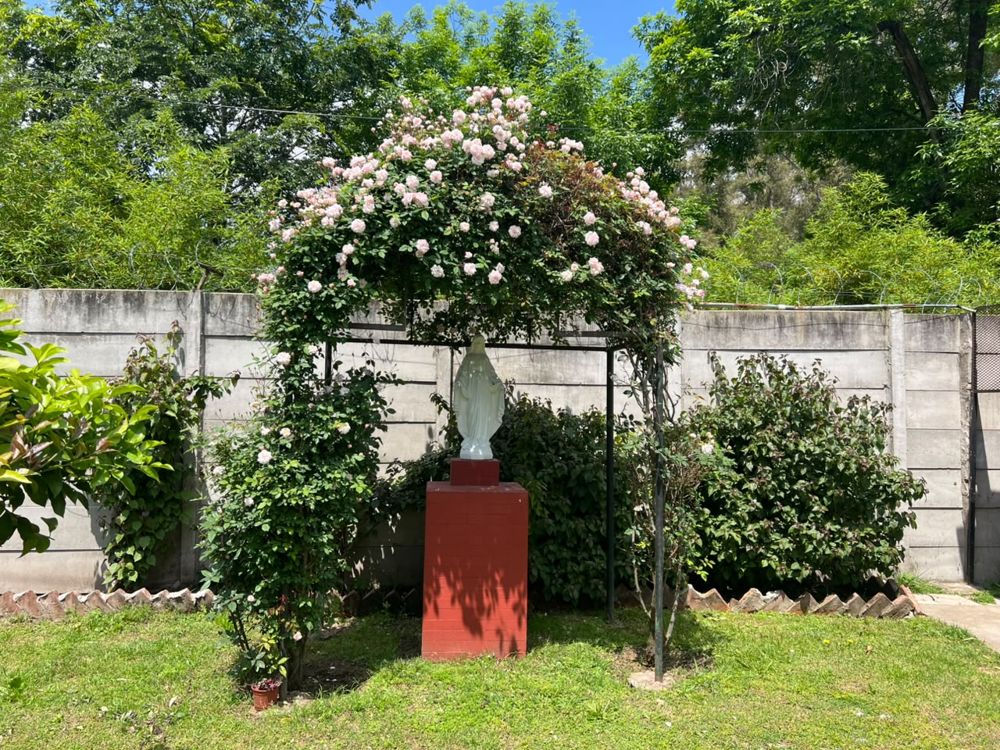
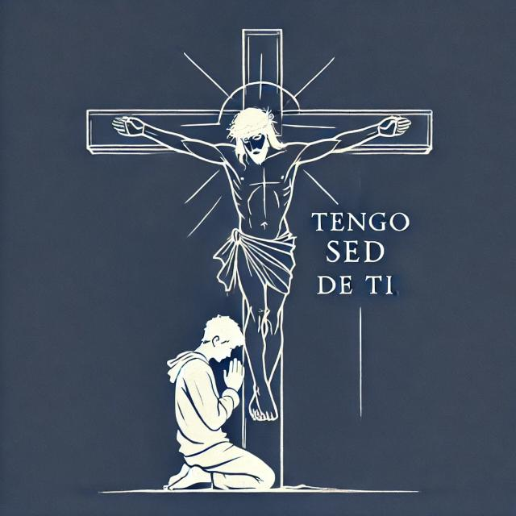

Nuestra residencia
Conocé este espacio de convivencia, estudio y acompañamiento.
Conocer la residencia →Tengo Sed
Somos una comunidad donde niños, jóvenes y adultos pueden encontrarse, compartir, aprender y crecer. A través de los grupos, la música, las actividades y el acompañamiento, buscamos vivir nuestra fe y ponerla al servicio de los demás.

Conocé nuestros espacios de encuentro, música, juegos y comunidad.
Descubrir espacios →Conocé este espacio de convivencia, estudio y acompañamiento.
Conocer la residencia →Descubrí el camino y la identidad del Centro Madre Teresa.
Conocer nuestra historia →Un espacio de escucha, encuentro y acompañamiento espiritual.
Conocé Tengo Sed →
La residencia es un espacio de convivencia, estudio y acompañamiento en la vida cotidiana del Centro Madre Teresa.
Consultar por la residencia
Tengo Sed nos invita a acercarnos a los demás, escuchar, acompañar y reconocer el valor de cada persona.
Si necesitás conversar, buscás acompañamiento espiritual o querés conocer más sobre esta propuesta, podés comunicarte con el Centro Madre Teresa.
Solicitar acompañamientoUna invitación a salir al encuentro de los demás, escuchar, acompañar y descubrir a Dios en la vida cotidiana.
Un espacio para compartir, crecer y vivir en comunidad.